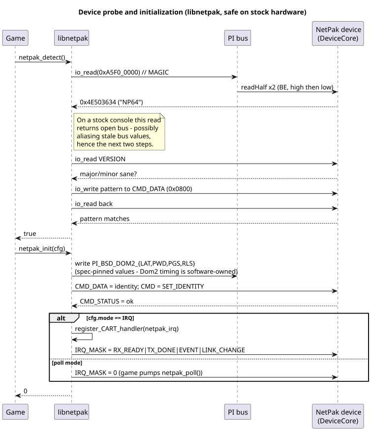
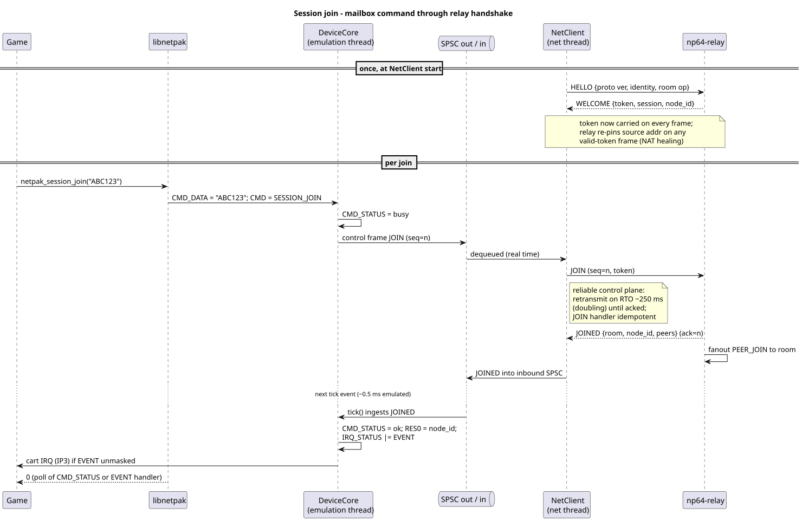
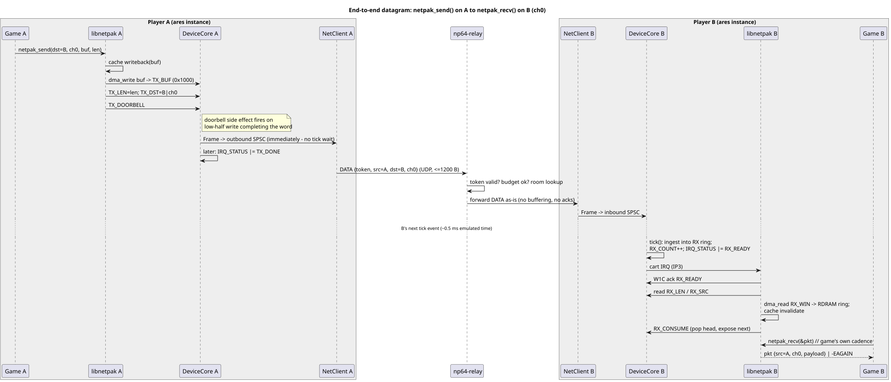
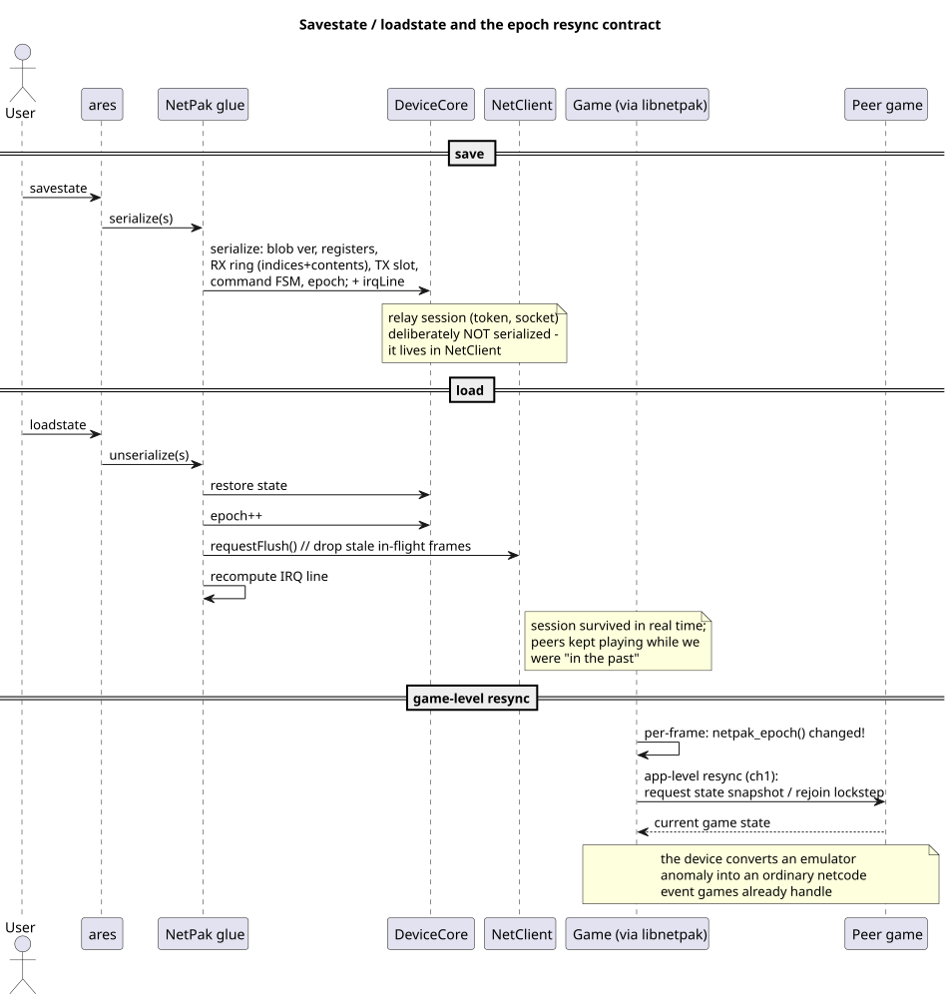
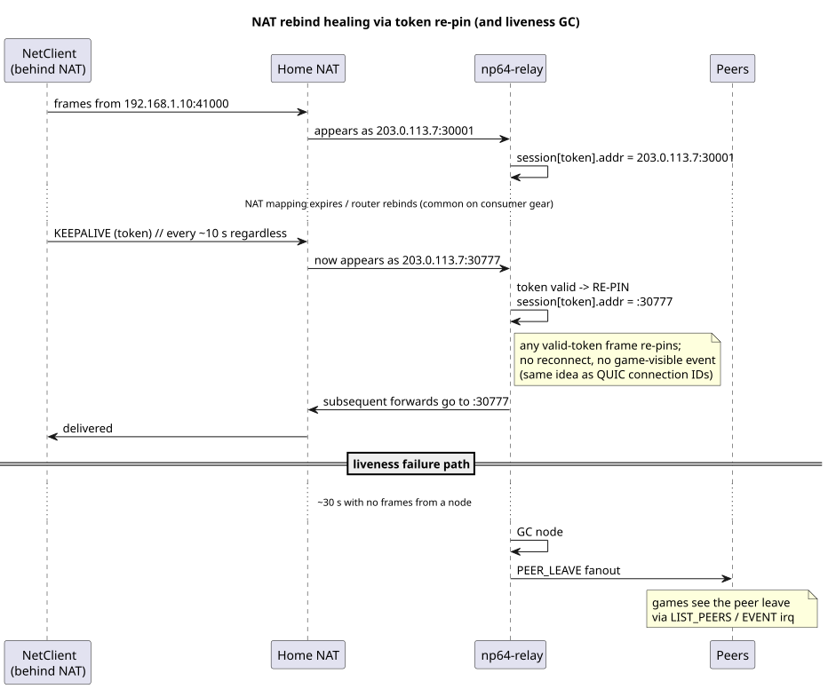
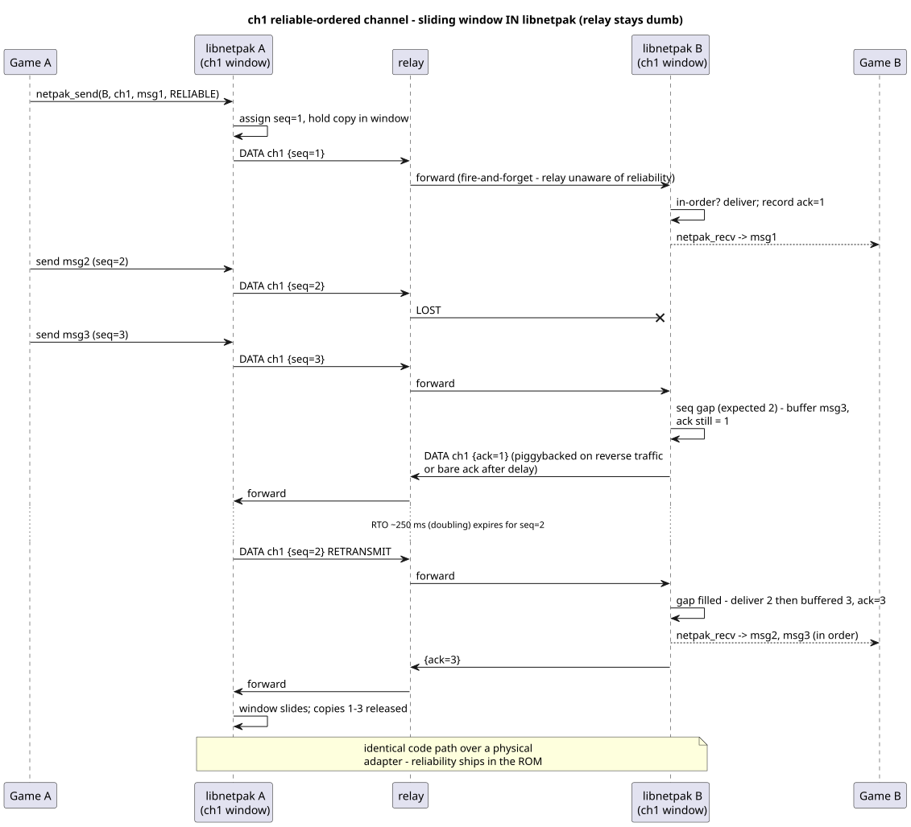

04 — Dynamic Views (Sequence Diagrams)
Six flow diagrams show how the architecture's pieces interact at runtime — each crosses at least two ownership domains (game / emulation thread / net thread / relay), which is exactly where designs break.
1. Probe & Init — Safe on stock hardware

Figure: Hardened probe that works on stock N64 (no device), then init programs the PI bus
Why three probe steps: On a stock console the NetPak window is open bus, and open-bus reads can alias recently driven bus values — a lone MAGIC match is not proof of presence. The sequence does: MAGIC → VERSION sanity → CMD_DATA write/read-back. All three steps complete in microseconds. Init then programs the PI bus itself (PI_BSD_DOM2_* to spec-pinned values), the key that made Dom2 the right decode home.
2. Session Join — Mailbox lifecycle

Figure: CMD write through reliable delivery to game receiving JOINED
The asynchrony: CMD_DATA+CMD write → CMD_STATUS=busy → control frame out the SPSC → reliable RTO/ack exchange to relay → JOINED ingested at the next tick → CMD_STATUS=ok, results in RES0-3, EVENT IRQ. Two timescales: net exchange happens in real time; the result becomes architecturally visible only on an emulated-time tick boundary (the property that enables savestates).
3. End-to-end datagram

Figure: Sender cache + DMA → relay forward → receiver tick → RDRAM ring → game poll
Signature flow: Sender fills TX_BUF via DMA, doorbell enqueues immediately (TX doesn't wait for a tick; only inbound visibility quantizes). Relay does zero work (forward only). Receiver: tick ingests into RX ring → RX_READY → IRQ → handler DMA to RDRAM ring → game pops at its cadence. The RDRAM ring decouples interrupt timing from game timing.
4. Savestate & Epoch

Figure: Device state serializes, relay session doesn't, game detects resync on epoch change
The design's answer to emulator features vs. live network: Device state serializes; the relay session deliberately does not. On load: restore → epoch++ → requestFlush() → recompute IRQ. The game notices netpak_epoch() changed and runs an application-level resync with peers — converting an emulator-only anomaly into an ordinary netcode event (late-join/resync) the game must handle anyway.
5. NAT rebind & Liveness

Figure: Token re-pinning heals address changes with zero game-visible effect
Two mechanisms: Keepalives (~10 s) keep bindings warm, and token re-pinning — the relay updates a session's source address on any valid-token frame — heals remaps with no game-visible effect (the same idea as QUIC connection IDs, RFC 9000 §5.1). Failure path: ~30 s silence → GC → PEER_LEAVE fanout (a peer event the game sees).
6. ch1 Reliable channel

Figure: Sliding window in libnetpak (not relay) so same code works on hardware
The key insight: All reliability lives in the library, the relay is blind to it. On loss, the receiver buffers out-of-order packets; RTO retransmit triggers on timeout; cumulative acks slide the window. The relay forwards every frame identically. This end-to-end placement is what lets the identical ROM code run on a physical adapter, echoing the classic end-to-end argument (Saltzer, Reed & Clark, 1984).
Invariants every sequence preserves
- Architecturally visible state mutates only on the emulation thread (register access or tick).
- Inbound data becomes visible only at tick boundaries (determinism under loopback).
- The net thread touches only SPSC queues + atomic status.
- The relay does no work before token validation, and no reliability work for ch0/ch1 data at all.
- Nothing the ROM observes distinguishes the virtual device from a spec-conformant physical one.